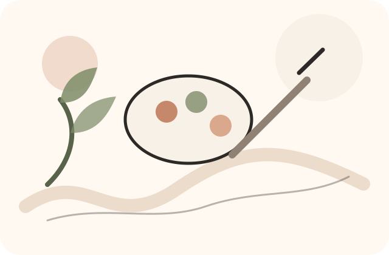
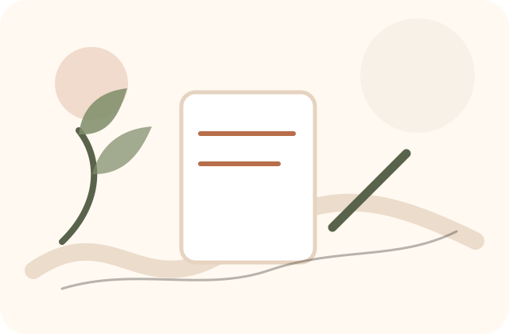
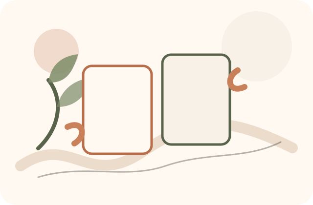
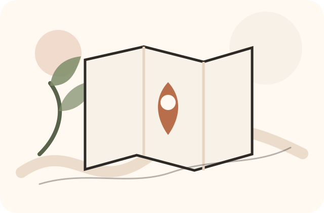
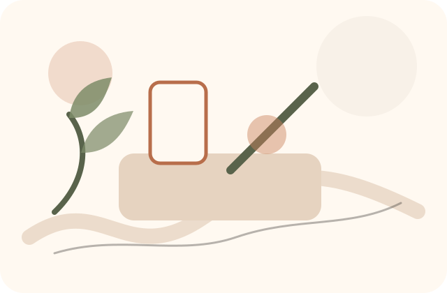
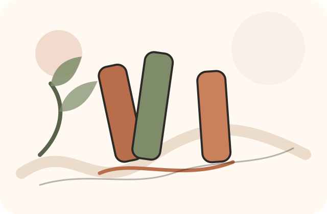
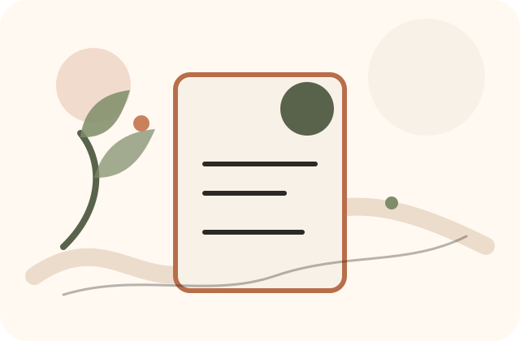

À la une
Aquarelle botanique
Un atelier doux pour découvrir l’aquarelle, apprendre les bases et repartir avec l’envie de continuer à la maison.
65 €
Réserver ma place
Programmation de saison
Ateliers, nouveautés boutique, créateurs locaux et idées cadeaux : la créativité se vit au fil des saisons à Remouchamps.
À la une
Un atelier doux pour découvrir l’aquarelle, apprendre les bases et repartir avec l’envie de continuer à la maison.
65 €
Réserver ma place
Réserver, découvrir, revenir
Un aperçu des prochains rendez-vous pour créer, apprendre, offrir ou simplement venir découvrir Linia.
65 €
Réserver45 €
Réserver38 €
RéserverDécouverte · Entrée libre
Gratuit
En savoir plusPapier, pinceaux, couleurs
Libre
Voir la sélectionChaque capsule réunit une envie créative, un atelier, une sélection boutique et une idée à emporter chez soi.

Une sélection douce autour de l’aquarelle, des papiers texturés et des créations inspirées de la nature.

Des activités accessibles pour partager un moment créatif en famille.

Une sélection pour offrir un atelier, une carte cadeau ou une création artisanale.
Des produits choisis pour accompagner les ateliers, les envies de saison et les idées cadeaux.

Peinture
Pour découvrir l’aquarelle avec une sélection simple et fiable.
32 €
Voir le produitPapiers & supports
Un support idéal pour tester, apprendre et conserver ses essais.
18 €
Voir le produit
Illustration
Pour décorer, illustrer et ajouter de la couleur sur différents supports.
24 €
Voir le produitCadeau
Pour offrir un atelier, du matériel ou un moment créatif.
50 €
OffrirLe créateur invité
Chaque saison, Linia met en lumière des artistes et artisans locaux à travers des créations, des rencontres ou des ateliers invités.
Une sélection d’objets, d’illustrations ou de pièces artisanales à découvrir en boutique, choisies pour leur sensibilité, leur qualité et leur lien avec la région.
Une carte cadeau Linia permet d’offrir un atelier, du matériel choisi avec soin ou simplement le plaisir de venir créer à Remouchamps.
Une section pensée pour annoncer les futurs ateliers, collaborations, nouveautés boutique et événements.

Un matin doux autour du café et des idées.
Être prévenuTester papiers, pinceaux et couleurs.
SuivreUne initiation graphique accessible.
Être prévenuDécouvrir un savoir-faire de la région.
SuivreCréer sans pression, dès le plus jeune âge.
Être prévenuCarnets, papiers et petits objets utiles.
SuivreLinia accueille les curieux, familles, artistes et passionnés de Remouchamps, Aywaille, Sprimont, Theux, Spa, Liège et de la Vallée de l’Amblève.
Adresse complète, horaires et accès seront ajoutés dans la version finale. Emplacement prévu pour une future carte Google Maps, sans iframe dans ce prototype.
Préparer ma visiteCette piste donne l’impression d’un lieu vivant, qui se renouvelle et donne envie de revenir régulièrement.
Elle demande une mise à jour régulière des contenus pour rester crédible.
Si Linia veut être perçue comme une adresse créative active, avec une programmation, des nouveautés et des rendez-vous locaux.